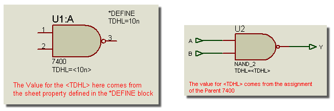
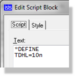

SHEET PROPERTIES
Introduction
Each sheet of a schematic can hold a set of property assignments. These may be considered as defining constants (either numeric or textual) which may be used within object property assignments on the particular sheet. In themselves they are not terribly useful, but their real power comes to light when they are used in the context of object property expressions.
For example, if a sheet property is defined in a block such as:
*DEFINE PI=3.142
you could then define a resistor as having the value:
VAL=EVAL(500/PI)
At netlist time, this syntax causes the netlist compiler to evaluate the property, and the resistor's value will appear in the netlist or bill of materials appear as 159.134.
For further information about property expressions see Property Expression Evaluation
Defining Sheet Properties
Sheet properties can be defined in the following ways:
- Directly, using a DEFINE script block. You can use this to define constants for use in expressions, as in the above example.
- As a result of parameter mapping using a MAP ON script block. In this case, the value of the parent property specified by the MAP ON statement is used to select a set of sheet property definitions from a table. This is most commonly used for creating universal simulation models, in which several similar devices are modelling using the same circuit but with different sets of sheet properties for each device type. Further discussion of this is given in the Proteus VSM manual.
- By inheriting the properties of a parent object. In other words,
if the parent object has the object property assignment:
R3=10k
then the child sheet will automatically acquire this as a sheet property. This provides the basis for parameterized circuits in which several instances of a given hierarchy module can be assigned different component values.
If the same property is defined both on a child sheet in a DEFINE or MAP ON block and in the parent object property block, the value from the parent will be used. This provides the means to provide default values for sheet properties which can be overridden as required.
Scope Rules for Sheet Properties
It is important to realise that sheet properties may only be referenced on the sheet for which they are defined. In particular, the sheet properties on a parent sheet are not accessible by any of its children unless they are passed though the parent object property block. If you do need to access a property in this manner, you can add a line such as:
TDHL=<TDHL>
to the appropriate parent object(s). If TDHL is defined as a sheet property on the parent sheet, it will then become an object property of the parent object, and thus be defined as a sheet property for the child sheet, where it can in turn appear in further object property expressions.
This arrangement is analogous to passing parameters in a C computer program.

The parent sheet and child sheet with parameter passing
Design Properties
The design properties for a given schematic are determined by accumulating all the sheet properties that are declared on the root sheets of the design. Since root sheets cannot have parents, it follows that design properties can only be declared using DEFINE script blocks on the root sheets.
For SDF netlist output, the design properties appear in the PROPERTIES block of the netlist, and may be interpreted by whatever application is reading the netlist. In the case of Proteus VSM, design properties are used to define simulator options such as the number of steps, the operating temperature and so forth. The specifics of this are given in the Proteus VSM manual.
To create a list of design properties:
- Go to the root sheet of your design by selecting the root sheet from the Design menu.
- Selecting the root sheet via the Design Menu.

- Select the Script icon from the Mode Selector toolbar.
- Point where you want the property definition block to appear and click left.
- Type in the first line of the script as *DEFINE
and then type in the property assignments as required.
